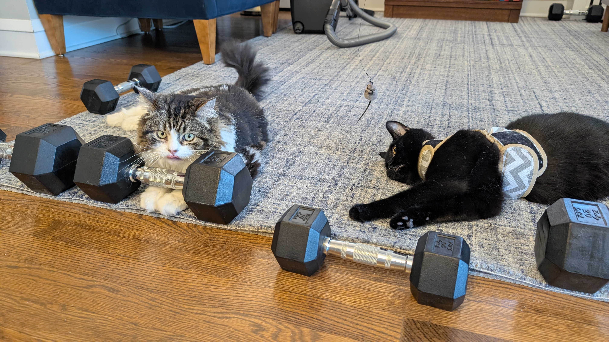
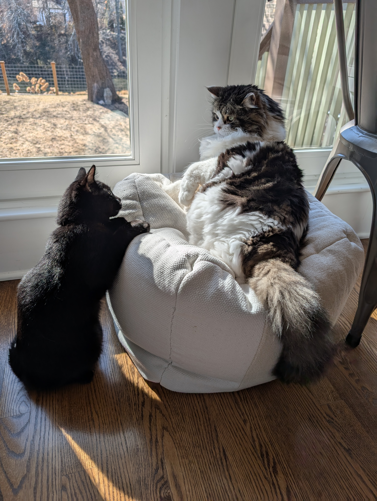

So, just for clarification, my house is a lot more interesting with cats. I have 2 cats, one is a fat siberian, which is a type of cat with really long fur, she's Juniper, and I have a smaller shelter cat named Shadow, who is adorable and extremly distructive. Juniper's daily routine is to sleep for 18 hours during the day and the other 5 hours 59 minutes yowling for food. And yes, I hear you asking what does she do the last minute (broken up into parts throughout the day) is eating the 5 dinners she is given because my parents can's stand the yowling of our "Dying of hunger" cat.
So, this is my other cat. Shadow. He is a beast of a cat, and will not hesitate to attack when he feels it is apt. He can go from the cutest, snuggliest, cat in the world to a panther that rips of human skin. His usaul attack is the lick, lick, BITE.


My house couldn't be better or more chaotic without them. This is an image of Shadow attacking Jusniper. This is a situation that happens so much that sometimes we just ignore it. The lesson here for Shadow would be just to leave Juniper slone.
She's innocent right? Right? RIGHT?